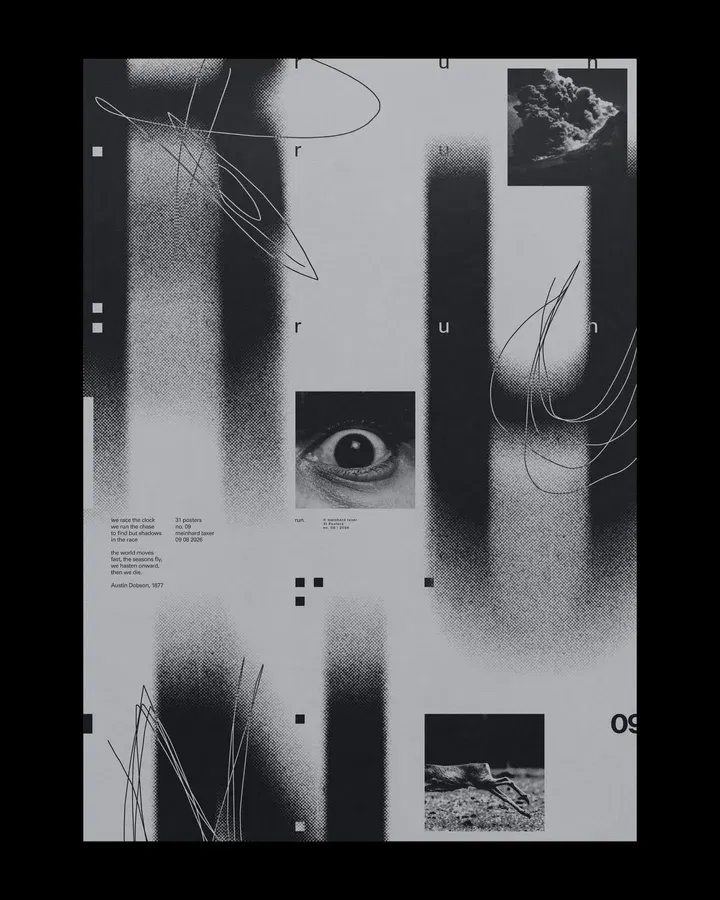

ECHO
ECHO

A sonic exploration of negative space. The tension between clinical precision and organic chaos, rendered in 3 minutes and 24 seconds.
TRACK 01
ECHO 3:24
"가장 텅 빈 곳에서만 내가 들렸다."



PRODUCED BY
JAY
VOID
MIXED & MASTERED
STUDIO NULL
ARTWORK
FORM & CHAOS
LABEL
AVANT RECORDS